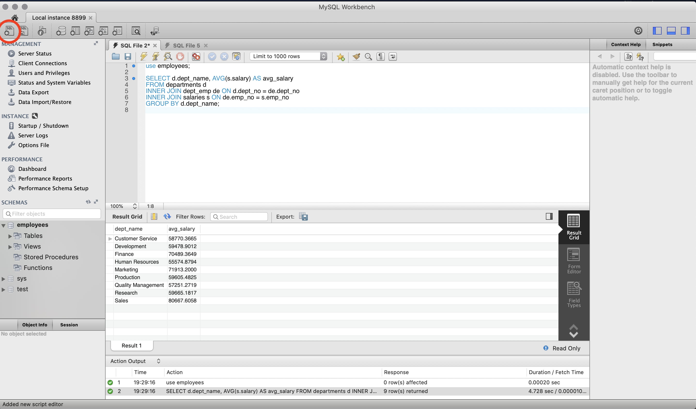

More queries
In this chapter we will be working on the MySQL Sample Database. The MySQL Sample Database provides a sample database called "employees" that you can use to practice SQL queries. You can download the database and load it into your MySQL server. Link to the database
Download the database and load it into MySQLWorkbench
🚧 You need to run MySQL server (with MAMP for example) before lunching MySQLWorkbench 🚧
Dowload the MySQL Sample Database
You can follow the documentation above or just go to : link and download the repo as zip.
Load MySQL Sample Database into MySQLWorkbench
When you have downloaded the git repo as zip go to your Download files and unzip the folder and open MySQLWorkbench then go to > File > Run SQL Scripts and load the file employees.sql
Run a test query
We will running a test query for testing our database, we must open a new file for writing our query for that you can click on the file icon button like in the screen below or go to File > New Query Tab
use employees;
SELECT d.dept_name, AVG(s.salary) AS avg_salary
FROM departments d
INNER JOIN dept_emp de ON d.dept_no = de.dept_no
INNER JOIN salaries s ON de.emp_no = s.emp_no
GROUP BY d.dept_name;
use employees; is here to tell to our software to use the employees database then you can see the result of our test query in the window bellow :

We will study in detail this query later don't worry.
In-depth look at more basic queries in SQL
We encourage you to pratice the queries into MySQLWorkbench, let's review some basics !
SELECT statement:
The SELECT statement is used to retrieve data from a table in a database. It can take multiple arguments, which are separated by commas.
The * character can be used as a shorthand to select all columns in a table. We often use the AS keyword is used to assign a name to a column in the output.
In this example, the AS keyword is used to assign a new name to the "salary" column in the output. The new name is "Annual Salary".
This query selects the first name, last name, and salary of all the employees in the "employees" table, but it renames the "salary" column as "Annual Salary" in the output.
Note that the AS keyword is optional, and you can also use a space or equals sign to assign a name to a column. For example, the following query is equivalent to the one above:
In both cases, the output column is named "Annual Salary".
WHERE clause:
The WHERE clause is used to filter the results returned by a SELECT statement. It contains a logical expression that evaluates to true or false for each row in the table.
This query selects all the columns from the "orders" table where the order date is on or after January 1, 2022.
This is an other example :
SELECT first_name, last_name, salary * 12 AS "Annual Salary"
FROM employees
WHERE hire_date >= '2005-01-01';
This query selects the first name, last name, and annual salary of all the employees in the "employees" table who were hired on or after January 1, 2005. The annual salary is calculated by multiplying the monthly salary by 12.
Note that the order of the SQL clauses matters. The WHERE clause is used to filter the results before the AS keyword is used to assign a new name to the output column.
JOIN clause
The JOIN clause is used to combine rows from two or more tables based on a related column between them. Here's an example:
SELECT customers.first_name, customers.last_name, orders.order_date
FROM customers
INNER JOIN orders
ON customers.customer_id = orders.customer_id;
We will discuss nore about JOIN later don't worry.
ORDER BY clause
The ORDER BY clause is used to sort the results returned by a SELECT statement based on one or more columns. Here's an example:
This query selects the product name and unit price of all the products in the "products" table and sorts the results in descending order based on the unit price.
GROUP BY clause
The GROUP BY clause is used to group the rows returned by a SELECT statement based on one or more columns. The columns listed in the SELECT statement must be either in the GROUP BY clause or have an aggregate function applied to them. Aggregate functions like COUNT, SUM, AVG, MAX, and MIN can be used to perform calculations on the grouped data.
This query groups the products in the "products" table by their category and counts the number of products in each category. The COUNT(*) function is used to count the number of rows in each group, and the AS keyword is used to assign the name "num_products" to the output column.
Here an other example :
SELECT department, AVG(salary) AS "Average Salary"
FROM employees
GROUP BY department
ORDER BY "Average Salary" DESC;
In this example, the GROUP BY clause is used to group the employees by department, and the AVG() function is used to calculate the average salary for each department. The AS keyword is used to assign a new name to the "AVG(salary)" expression in the output. The new name is "Average Salary".
The ORDER BY keyword is used to sort the results in descending order based on the "Average Salary" column. Note that we need to enclose the output column name in double quotes because it contains a space.
This query selects the department and average salary of all the employees in the "employees" table, grouped by department, and sorted in descending order by average salary.
Note that when using the GROUP BY clause, the SELECT statement can only include the columns that are specified in the GROUP BY clause or have an aggregate function applied to them. Any other columns will result in an error, unless they are included in an aggregate function. In this example, we only select the department and average salary columns because the department column is included in the GROUP BY clause.
Wrap up
These are just a few examples of basic SQL queries, but they provide a good foundation for building more complex queries. By combining these statements with other SQL clauses, you can perform powerful data analysis and extract valuable insights from your data.
Let's summarize what we've learn in this section :
- The SELECT statement is used to retrieve data from a table in a database. It can take multiple arguments, which are separated by commas. The * character can be used as a shorthand to select all columns in a table. The AS keyword is used to assign a name to a column in the output.
- The WHERE clause is used to filter the results returned by a SELECT statement. It contains a logical expression that evaluates to true or false for each row in the table.
- The JOIN clause is used to combine rows from two or more tables based on a related column between them. It can be used to join tables on a primary key/foreign key relationship or on a common column.
- The GROUP BY clause is used to group the rows returned by a SELECT statement based on one or more columns. The columns listed in the SELECT statement must be either in the GROUP BY clause or have an aggregate function applied to them.
- Aggregate functions like COUNT, SUM, AVG, MAX, and MIN can be used to perform calculations on the grouped data.
- The ORDER BY clause is used to sort the results returned by a SELECT statement based on one or more columns. It can be used to sort in ascending (ASC) or descending (DESC) order.
- The AS keyword is used to assign a new name to a column or an expression in the output.
- SQL keywords are not case-sensitive, but it is a best practice to use them in uppercase to make the code more readable.
- The order of the SQL clauses matters, and it can affect the output of the query.